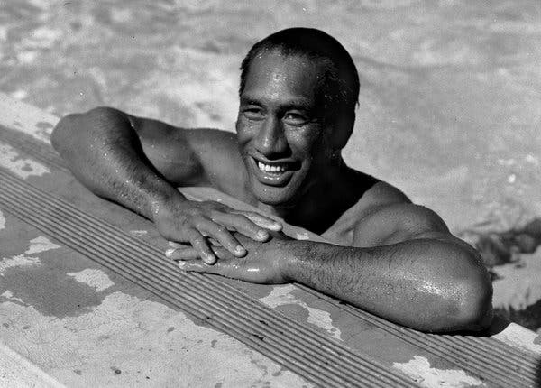
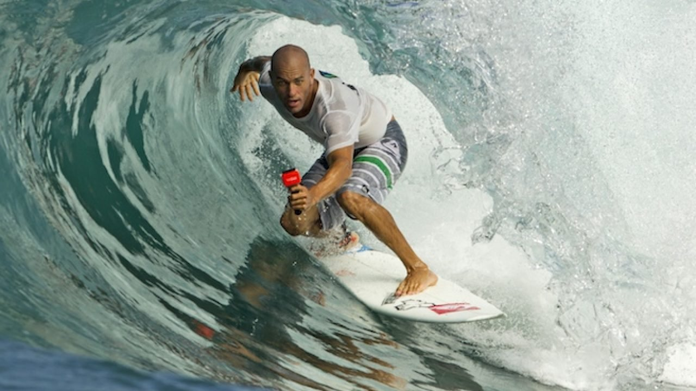

Surfing was a central part of ancient Polynesian culture and predates European contact. The chief (Ali'i) was traditionally the most skilled wave rider in the community with the best board made from the best wood. The ruling class had the best beaches and the best boards, and the commoners were not allowed on the same beaches, but they could gain prestige by their ability to ride the surf on their boards. In Tahiti and Samoa, surfing was a popular pastime that was often used as part of warriors' training. Warriors often paddled to surf breaks and were recorded in print by early European historians as spending many hours bravely paddling head-on into large surf and riding waves. Canoes often accompanied surfing parties and the men would often swap between canoeing and paddling boards, and then catch fish after their recreational activities. In Hawai'i, surfing became ingrained into the very fabric of Hawaii'an religion and culture.
 